Web Server Statistics for roam.byu.edu
Web Server Statistics for roam.byu.edu
Program started on Sun, Apr 26 2020 at 12:37 PM.
Analyzed requests from Fri, Jan 18 2019 at 5:09 PM to Sat, Apr 25 2020 at 2:40 PM (462.90 days).
Web Server Statistics for roam.byu.eduProgram started on Sun, Apr 26 2020 at 12:37 PM.
Analyzed requests from Fri, Jan 18 2019 at 5:09 PM to Sat, Apr 25 2020 at 2:40 PM (462.90 days).
(Go To: Top | General Summary | Monthly Report | Daily Summary | Hourly Summary | Domain Report | Organization Report | Failed Referrer Report | Referring Site Report | Browser Report | Browser Summary | Operating System Report | Status Code Report | File Size Report | File Type Report | Directory Report | Request Report)
Figures in parentheses refer to the 7-day period ending Apr 26 2020 at 12:37 PM.
Successful requests: 4,672 (56)
Average successful requests per day: 10 (7)
Successful requests for pages: 295 (2)
Failed requests: 1,126 (0)
Distinct files requested: 139 (269)
Distinct hosts served: 335 (1,189)
Data transferred: 23.78 gigabytes (1.23 gigabytes)
Average data transferred per day: 52.61 megabytes (179.53 megabytes)
(Go To: Top | General Summary | Monthly Report | Daily Summary | Hourly Summary | Domain Report | Organization Report | Failed Referrer Report | Referring Site Report | Browser Report | Browser Summary | Operating System Report | Status Code Report | File Size Report | File Type Report | Directory Report | Request Report)
Each unit ( ) represents 4 requests for pages or part thereof.
) represents 4 requests for pages or part thereof.
| month | #reqs | #pages | |
|---|---|---|---|
| Jan 2019 | 34 | 7 |  |
| Feb 2019 | 5 | 3 | |
| Mar 2019 | 172 | 9 | |
| Apr 2019 | 510 | 49 |   |
| May 2019 | 180 | 17 | |
| Jun 2019 | 38 | 2 | |
| Jul 2019 | 122 | 10 | |
| Aug 2019 | 2350 | 138 |  |
| Sep 2019 | 183 | 7 | |
| Oct 2019 | 244 | 10 | |
| Nov 2019 | 74 | 2 | |
| Dec 2019 | 90 | 7 | |
| Jan 2020 | 352 | 8 | |
| Feb 2020 | 166 | 7 | |
| Mar 2020 | 45 | 9 | |
| Apr 2020 | 107 | 10 | |
Busiest month: Aug 2019 (138 requests for pages).
(Go To: Top | General Summary | Monthly Report | Daily Summary | Hourly Summary | Domain Report | Organization Report | Failed Referrer Report | Referring Site Report | Browser Report | Browser Summary | Operating System Report | Status Code Report | File Size Report | File Type Report | Directory Report | Request Report)
Each unit () represents 2 requests for pages or part thereof.
| day | #reqs | #pages | |
|---|---|---|---|
| Sun | 262 | 15 | |
| Mon | 723 | 61 |  |
| Tue | 807 | 62 | |
| Wed | 1288 | 57 | |
| Thu | 650 | 28 | |
| Fri | 742 | 58 | |
| Sat | 200 | 14 | |
(Go To: Top | General Summary | Monthly Report | Daily Summary | Hourly Summary | Domain Report | Organization Report | Failed Referrer Report | Referring Site Report | Browser Report | Browser Summary | Operating System Report | Status Code Report | File Size Report | File Type Report | Directory Report | Request Report)
Each unit () represents 2 requests for pages or part thereof.
| hour | #reqs | #pages | |
|---|---|---|---|
| 0 | 126 | 12 | |
| 1 | 39 | 3 | |
| 2 | 291 | 11 | |
| 3 | 155 | 5 | |
| 4 | 24 | 1 | |
| 5 | 13 | 3 | |
| 6 | 53 | 5 | |
| 7 | 43 | 2 | |
| 8 | 4 | 0 | |
| 9 | 9 | 2 | |
| 10 | 29 | 1 | |
| 11 | 178 | 16 | |
| 12 | 110 | 4 | |
| 13 | 99 | 7 | |
| 14 | 458 | 15 | |
| 15 | 114 | 4 | |
| 16 | 318 | 20 | |
| 17 | 294 | 19 | |
| 18 | 387 | 20 | |
| 19 | 304 | 17 | |
| 20 | 291 | 14 | |
| 21 | 574 | 60 | |
| 22 | 342 | 37 | |
| 23 | 417 | 17 | |
(Go To: Top | General Summary | Monthly Report | Daily Summary | Hourly Summary | Domain Report | Organization Report | Failed Referrer Report | Referring Site Report | Browser Report | Browser Summary | Operating System Report | Status Code Report | File Size Report | File Type Report | Directory Report | Request Report)
Listing domains, sorted by the amount of traffic.
| #reqs | %bytes | domain |
|---|---|---|
| 4672 | 100% | [unresolved numerical addresses] |
(Go To: Top | General Summary | Monthly Report | Daily Summary | Hourly Summary | Domain Report | Organization Report | Failed Referrer Report | Referring Site Report | Browser Report | Browser Summary | Operating System Report | Status Code Report | File Size Report | File Type Report | Directory Report | Request Report)
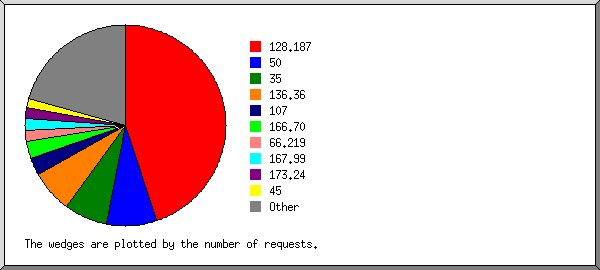
Listing the top 20 organizations by the number of requests, sorted by the number of requests.
| #reqs | %bytes | organization |
|---|---|---|
| 2186 | 32.37% | 128.187 |
| 420 | 25.30% | 50 |
| 354 | 1.77% | 35 |
| 266 | 11.61% | 136.36 |
| 145 | 0.28% | 107 |
| 140 | 13.15% | 166.70 |
| 94 | 0.15% | 173.24 |
| 81 | 167.99 | |
| 75 | 0.02% | 45 |
| 60 | 0.87% | 34 |
| 49 | 0.24% | 12 |
| 48 | 0.07% | 172.56 |
| 47 | 0.05% | 66.219 |
| 47 | 0.11% | 172.58 |
| 46 | 0.11% | 147.103 |
| 36 | 0.64% | 69 |
| 36 | 1.54% | 111 |
| 35 | 2.81% | 13 |
| 35 | 3.09% | 52 |
| 33 | 0.53% | 18 |
| 439 | 5.29% | [not listed: 28 organizations] |
(Go To: Top | General Summary | Monthly Report | Daily Summary | Hourly Summary | Domain Report | Organization Report | Failed Referrer Report | Referring Site Report | Browser Report | Browser Summary | Operating System Report | Status Code Report | File Size Report | File Type Report | Directory Report | Request Report)
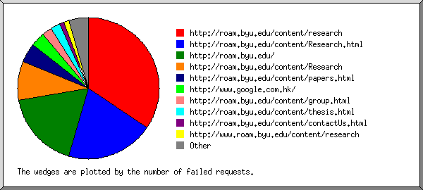
Listing referring URLs, sorted by the number of failed requests.
(Go To: Top | General Summary | Monthly Report | Daily Summary | Hourly Summary | Domain Report | Organization Report | Failed Referrer Report | Referring Site Report | Browser Report | Browser Summary | Operating System Report | Status Code Report | File Size Report | File Type Report | Directory Report | Request Report)
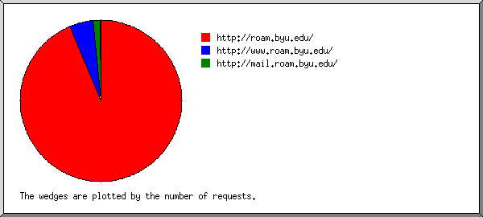
Listing referring sites, sorted by the number of requests.
| #reqs | site |
|---|---|
| 3969 | http://roam.byu.edu/ |
| 200 | http://www.roam.byu.edu/ |
| 5 | android-app://com.Slack/ |
(Go To: Top | General Summary | Monthly Report | Daily Summary | Hourly Summary | Domain Report | Organization Report | Failed Referrer Report | Referring Site Report | Browser Report | Browser Summary | Operating System Report | Status Code Report | File Size Report | File Type Report | Directory Report | Request Report)
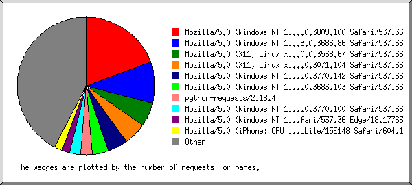
Listing the top 40 browsers by the number of requests for pages, sorted by the number of requests for pages.
| #reqs | #pages | browser |
|---|---|---|
| 909 | 62 | Mozilla/5.0 (Windows NT 10.0; Win64; x64) AppleWebKit/537.36 (KHTML, like Gecko) Chrome/76.0.3809.100 Safari/537.36 |
| 295 | 31 | Mozilla/5.0 (Windows NT 10.0; Win64; x64) AppleWebKit/537.36 (KHTML, like Gecko) Chrome/73.0.3683.86 Safari/537.36 |
| 395 | 18 | Mozilla/5.0 (X11; Linux x86_64) AppleWebKit/537.36 (KHTML, like Gecko) Chrome/70.0.3538.67 Safari/537.36 |
| 17 | 17 | Mozilla/5.0 (X11; Linux x86_64) AppleWebKit/537.36 (KHTML, like Gecko) Chrome/59.0.3071.104 Safari/537.36 |
| 190 | 15 | Mozilla/5.0 (Windows NT 10.0; Win64; x64) AppleWebKit/537.36 (KHTML, like Gecko) Chrome/75.0.3770.142 Safari/537.36 |
| 116 | 12 | Mozilla/5.0 (Windows NT 10.0; Win64; x64) AppleWebKit/537.36 (KHTML, like Gecko) Chrome/73.0.3683.103 Safari/537.36 |
| 9 | 9 | python-requests/2.18.4 |
| 138 | 8 | Mozilla/5.0 (Windows NT 10.0; Win64; x64) AppleWebKit/537.36 (KHTML, like Gecko) Chrome/75.0.3770.100 Safari/537.36 |
| 118 | 6 | Mozilla/5.0 (Windows NT 10.0; Win64; x64) AppleWebKit/537.36 (KHTML, like Gecko) Chrome/64.0.3282.140 Safari/537.36 Edge/18.17763 |
| 143 | 6 | Mozilla/5.0 (iPhone; CPU iPhone OS 12_4 like Mac OS X) AppleWebKit/605.1.15 (KHTML, like Gecko) Version/12.1.2 Mobile/15E148 Safari/604.1 |
| 47 | 6 | Mozilla/5.0 (iPad; CPU OS 12_1_4 like Mac OS X) AppleWebKit/605.1.15 (KHTML, like Gecko) Version/12.0 Mobile/15E148 Safari/604.1 |
| 12 | 6 | Mozilla/5.0 (X11; Linux x86_64) AppleWebKit/537.36 (KHTML, like Gecko) Chrome/49.0.2623.75 Safari/537.36 Google Favicon |
| 44 | 4 | Mozilla/5.0 (Linux; Android 8.0.0; SAMSUNG SM-G930T Build/R16NW) AppleWebKit/537.36 (KHTML, like Gecko) SamsungBrowser/9.2 Chrome/67.0.3396.87 Mobile Safari/537.36 |
| 80 | 4 | Mozilla/5.0 (Windows NT 10.0; Win64; x64) AppleWebKit/537.36 (KHTML, like Gecko) Chrome/76.0.3809.87 Safari/537.36 |
| 43 | 4 | Mozilla/5.0 (Windows NT 10.0; Win64; x64) AppleWebKit/537.36 (KHTML, like Gecko) Chrome/74.0.3729.131 Safari/537.36 |
| 3 | 3 | Mozilla/5.0 (Windows NT 10.0; Win64; x64) AppleWebKit/537.36 (KHTML, like Gecko; compatible; BuiltWith/1.0; +http://builtwith.com/biup) Chrome/74.0.3729.131 Safari/537.36 |
| 9 | 3 | Mozilla/5.0 (Windows NT 10.0; Win64; x64) AppleWebKit/537.36 (KHTML, like Gecko) Chrome/71.0.3578.98 Safari/537.36 |
| 42 | 3 | Mozilla/5.0 (Macintosh; Intel Mac OS X 10_14_0) AppleWebKit/537.36 (KHTML, like Gecko) Chrome/73.0.3683.86 Safari/537.36 |
| 55 | 3 | Mozilla/5.0 (Macintosh; Intel Mac OS X 10_14_6) AppleWebKit/605.1.15 (KHTML, like Gecko) Version/12.1.2 Safari/605.1.15 |
| 92 | 3 | Mozilla/5.0 (Windows NT 10.0; Win64; x64) AppleWebKit/537.36 (KHTML, like Gecko) Chrome/76.0.3809.132 Safari/537.36 |
| 41 | 3 | Mozilla/5.0 (iPhone; CPU iPhone OS 12_2 like Mac OS X) AppleWebKit/605.1.15 (KHTML, like Gecko) GSA/69.1.238102067 Mobile/15E148 Safari/605.1 |
| 72 | 3 | Mozilla/5.0 (Windows NT 10.0; Win64; x64) AppleWebKit/537.36 (KHTML, like Gecko) Chrome/77.0.3865.90 Safari/537.36 |
| 72 | 3 | Mozilla/5.0 (iPhone; CPU iPhone OS 12_1_4 like Mac OS X) AppleWebKit/605.1.15 (KHTML, like Gecko) Version/12.0 Mobile/15E148 Safari/604.1 |
| 2 | 2 | Mozilla/5.0 (compatible; NetcraftSurveyAgent/1.0; +info@netcraft.com) |
| 74 | 2 | Mozilla/5.0 (Macintosh; Intel Mac OS X 10_14_4) AppleWebKit/605.1.15 (KHTML, like Gecko) Version/12.1 Safari/605.1.15 |
| 95 | 2 | Mozilla/5.0 (Windows NT 6.1; Win64; x64) AppleWebKit/537.36 (KHTML, like Gecko) Chrome/79.0.3945.79 Safari/537.36 |
| 89 | 2 | Mozilla/5.0 (Windows NT 10.0; WOW64; Trident/7.0; rv:11.0) like Gecko |
| 60 | 2 | Mozilla/5.0 (iPhone; CPU iPhone OS 12_4_1 like Mac OS X) AppleWebKit/605.1.15 (KHTML, like Gecko) Version/12.1.2 Mobile/15E148 Safari/604.1 |
| 78 | 2 | Mozilla/5.0 (X11; Linux x86_64) AppleWebKit/537.36 (KHTML, like Gecko) Chrome/79.0.3945.130 Safari/537.36 |
| 85 | 2 | Mozilla/5.0 (Windows NT 10.0; Win64; x64) AppleWebKit/537.36 (KHTML, like Gecko) Chrome/79.0.3945.117 Safari/537.36 |
| 47 | 2 | Mozilla/5.0 (Linux; Android 8.0.0; SAMSUNG SM-G930P Build/R16NW) AppleWebKit/537.36 (KHTML, like Gecko) SamsungBrowser/9.4 Chrome/67.0.3396.87 Mobile Safari/537.36 |
| 61 | 2 | Mozilla/5.0 (Windows NT 10.0; Win64; x64) AppleWebKit/537.36 (KHTML, like Gecko) Chrome/79.0.3945.130 Safari/537.36 |
| 23 | 2 | Mozilla/5.0 (Windows NT 10.0; Win64; x64) AppleWebKit/537.36 (KHTML, like Gecko) Chrome/72.0.3626.119 Safari/537.36 |
| 27 | 2 | Mozilla/5.0 (iPhone; CPU iPhone OS 12_1_2 like Mac OS X) AppleWebKit/605.1.15 (KHTML, like Gecko) Version/12.0 Mobile/15E148 Safari/604.1 |
| 23 | 1 | Mozilla/5.0 (Windows NT 10.0; WOW64) AppleWebKit/537.36 (KHTML, like Gecko) Chrome/76.0.3809.100 Safari/537.36 |
| 24 | 1 | Mozilla/5.0 (iPhone; CPU iPhone OS 12_3_1 like Mac OS X) AppleWebKit/605.1.15 (KHTML, like Gecko) Version/12.1.1 Mobile/15E148 Safari/604.1 |
| 24 | 1 | Mozilla/5.0 (X11; Linux x86_64) AppleWebKit/537.36 (KHTML, like Gecko) Chrome/76.0.3809.132 Safari/537.36 |
| 23 | 1 | Mozilla/5.0 (Linux; Android 8.1.0; SM-J327V) AppleWebKit/537.36 (KHTML, like Gecko) Chrome/76.0.3809.89 Mobile Safari/537.36 |
| 1 | 1 | Mozilla/5.0 (X11; Ubuntu; Linux x86_64) AppleWebKit/537.36 (KHTML, like Gecko) Chrome/60.0.3112.101 Safari/537.36 |
| 24 | 1 | Mozilla/5.0 (Linux; Android 8.1.0; Moto G (5) Plus) AppleWebKit/537.36 (KHTML, like Gecko) Chrome/73.0.3683.90 Mobile Safari/537.36 |
| 969 | 34 | [not listed: 51 browsers] |
(Go To: Top | General Summary | Monthly Report | Daily Summary | Hourly Summary | Domain Report | Organization Report | Failed Referrer Report | Referring Site Report | Browser Report | Browser Summary | Operating System Report | Status Code Report | File Size Report | File Type Report | Directory Report | Request Report)
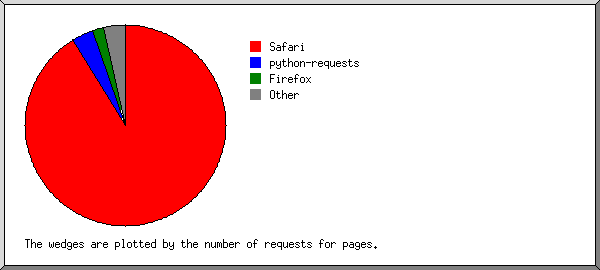
Listing browsers with at least 1 request for a page, sorted by the number of requests for pages.
| # | #reqs | #pages | browser |
|---|---|---|---|
| 1 | 4220 | 271 | Safari |
| 3444 | 239 | Safari/537 | |
| 452 | 23 | Safari/604 | |
| 324 | 9 | Safari/605 | |
| 2 | 9 | 9 | python-requests |
| 9 | 9 | python-requests/2 | |
| 3 | 54 | 6 | Firefox |
| 1 | 1 | Firefox/57 | |
| 24 | 1 | Firefox/72 | |
| 1 | 1 | Firefox/58 | |
| 3 | 1 | Firefox/64 | |
| 24 | 1 | Firefox/68 | |
| 1 | 1 | Firefox/47 | |
| 4 | 115 | 3 | Mozilla |
| 5 | 2 | 2 | Netscape (compatible) |
| 6 | 1 | 1 | Microsoft Office PowerPoint 2014 |
| 7 | 1 | 1 | Screaming Frog SEO Spider |
| 1 | 1 | Screaming Frog SEO Spider/10 | |
| 8 | 1 | 1 | MSIE |
| 1 | 1 | MSIE/7 | |
| 268 | 0 | [not listed: 2 browsers] |
(Go To: Top | General Summary | Monthly Report | Daily Summary | Hourly Summary | Domain Report | Organization Report | Failed Referrer Report | Referring Site Report | Browser Report | Browser Summary | Operating System Report | Status Code Report | File Size Report | File Type Report | Directory Report | Request Report)
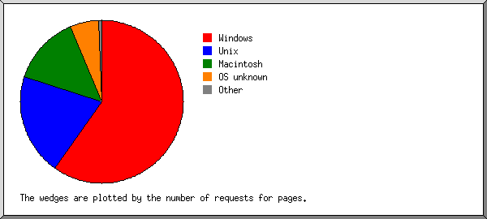
Listing operating systems, sorted by the number of requests for pages.
| # | #reqs | #pages | OS |
|---|---|---|---|
| 1 | 2644 | 178 | Windows |
| 2522 | 172 | Windows NT | |
| 122 | 6 | Unknown Windows | |
| 2 | 826 | 62 | Unix |
| 826 | 62 | Linux | |
| 3 | 867 | 39 | Macintosh |
| 4 | 281 | 13 | OS unknown |
| 5 | 53 | 2 | Known robots |
(Go To: Top | General Summary | Monthly Report | Daily Summary | Hourly Summary | Domain Report | Organization Report | Failed Referrer Report | Referring Site Report | Browser Report | Browser Summary | Operating System Report | Status Code Report | File Size Report | File Type Report | Directory Report | Request Report)
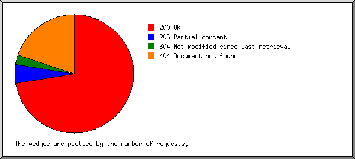
Listing status codes, sorted numerically.
| #reqs | status code |
|---|---|
| 4179 | 200 OK |
| 315 | 206 Partial content |
| 178 | 304 Not modified since last retrieval |
| 1126 | 404 Document not found |
(Go To: Top | General Summary | Monthly Report | Daily Summary | Hourly Summary | Domain Report | Organization Report | Failed Referrer Report | Referring Site Report | Browser Report | Browser Summary | Operating System Report | Status Code Report | File Size Report | File Type Report | Directory Report | Request Report)
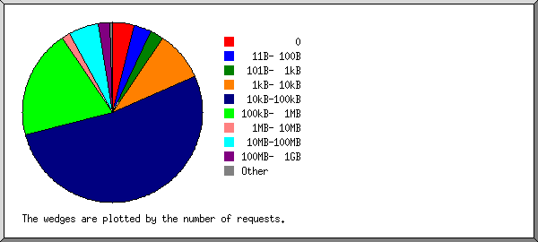
| size | #reqs | %bytes |
|---|---|---|
| 0 | 204 | |
| 1B- 10B | 17 | |
| 11B- 100B | 144 | |
| 101B- 1kB | 105 | |
| 1kB- 10kB | 406 | 0.01% |
| 10kB-100kB | 2417 | 0.45% |
| 100kB- 1MB | 934 | 1.26% |
| 1MB- 10MB | 77 | 0.70% |
| 10MB-100MB | 257 | 20.75% |
| 100MB- 1GB | 111 | 76.83% |
(Go To: Top | General Summary | Monthly Report | Daily Summary | Hourly Summary | Domain Report | Organization Report | Failed Referrer Report | Referring Site Report | Browser Report | Browser Summary | Operating System Report | Status Code Report | File Size Report | File Type Report | Directory Report | Request Report)
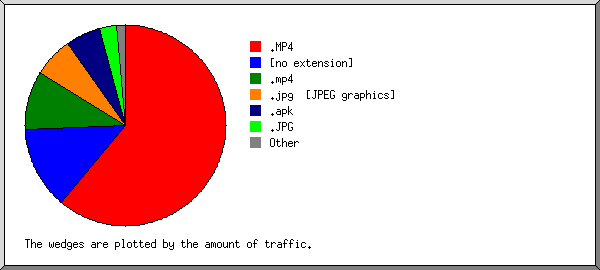
Listing extensions with at least 0.1% of the traffic, sorted by the amount of traffic.
| #reqs | %bytes | extension |
|---|---|---|
| 175 | 62.75% | .MP4 |
| 200 | 12.85% | [no extension] |
| 134 | 9.79% | .mp4 |
| 593 | 5.73% | .jpg [JPEG graphics] |
| 10 | 4.79% | .apk |
| 142 | 2.80% | .JPG |
| 335 | 0.57% | .png [PNG graphics] |
| 2020 | 0.32% | .js [JavaScript code] |
| 412 | 0.24% | .css [Cascading Style Sheets] |
| 651 | 0.16% | [not listed: 11 extensions] |
(Go To: Top | General Summary | Monthly Report | Daily Summary | Hourly Summary | Domain Report | Organization Report | Failed Referrer Report | Referring Site Report | Browser Report | Browser Summary | Operating System Report | Status Code Report | File Size Report | File Type Report | Directory Report | Request Report)
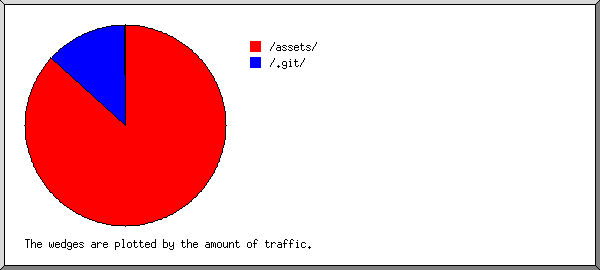
Listing directories with at least 0.01% of the traffic, sorted by the amount of traffic.
| #reqs | %bytes | directory |
|---|---|---|
| 3857 | 87.09% | /assets/ |
| 149 | 12.84% | /.git/ |
| 160 | 0.04% | /PaperKitPro/ |
| 251 | 0.01% | [root directory] |
| 255 | 0.02% | [not listed: 3 directories] |
(Go To: Top | General Summary | Monthly Report | Daily Summary | Hourly Summary | Domain Report | Organization Report | Failed Referrer Report | Referring Site Report | Browser Report | Browser Summary | Operating System Report | Status Code Report | File Size Report | File Type Report | Directory Report | Request Report)
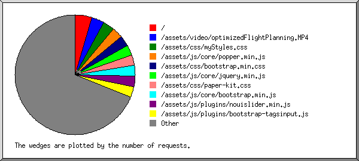
Listing files with at least 20 requests, sorted by the number of requests.
| #reqs | %bytes | last time | file |
|---|---|---|---|
| 214 | 0.01% | Apr/23/20 4:43 PM | / |
| 43 | Jan/14/20 5:58 PM | /?128.187.116.21 | |
| 13 | Jan/29/20 3:17 PM | /?111.225.149.103 | |
| 175 | 62.75% | Apr/23/20 4:53 PM | /assets/video/optimizedFlightPlanning.MP4 |
| 134 | Apr/25/20 2:40 PM | /assets/css/myStyles.css | |
| 134 | 9.79% | Apr/23/20 4:51 PM | /assets/video/sandBoilVideo.mp4 |
| 131 | 0.01% | Apr/25/20 2:40 PM | /assets/js/core/popper.min.js |
| 128 | 0.03% | Apr/23/20 4:43 PM | /assets/js/core/bootstrap.min.js |
| 128 | 0.01% | Apr/23/20 4:43 PM | /assets/js/plugins/nouislider.min.js |
| 128 | 0.01% | Apr/23/20 4:43 PM | /assets/js/plugins/bootstrap-tagsinput.js |
| 127 | 0.07% | Apr/25/20 2:40 PM | /assets/css/bootstrap.min.css |
| 127 | 0.04% | Apr/25/20 2:40 PM | /assets/js/core/jquery.min.js |
| 127 | 0.15% | Apr/25/20 2:40 PM | /assets/css/paper-kit.css |
| 127 | 0.15% | Apr/25/20 2:40 PM | /assets/css/paper-kit.css?v=2.3.0 |
| 127 | 0.01% | Apr/23/20 4:43 PM | /assets/js/plugins/bootstrap-switch.js |
| 126 | 0.05% | Apr/23/20 4:43 PM | /assets/js/plugins/presentation-page/main.js |
| 126 | Apr/23/20 4:43 PM | /assets/js/plugins/jasny-bootstrap.min.js | |
| 125 | 0.02% | Apr/23/20 4:43 PM | /assets/js/plugins/moment.min.js |
| 125 | Apr/23/20 4:43 PM | /assets/js/plugins/photo_swipe/init-gallery.js | |
| 125 | 0.04% | Apr/23/20 4:43 PM | /assets/js/plugins/bootstrap-datetimepicker.js |
| 124 | 0.05% | Apr/23/20 4:43 PM | /assets/js/plugins/bootstrap-selectpicker.js |
| 124 | 0.41% | Apr/23/20 4:43 PM | /assets/img/J-icons/ROAM_title.png |
| 124 | Apr/23/20 4:43 PM | /assets/js/plugins/photo_swipe/photoswipe-ui-default.min.js | |
| 124 | 0.01% | Apr/23/20 4:43 PM | /assets/js/plugins/photo_swipe/photoswipe.min.js |
| 123 | 0.01% | Apr/23/20 4:43 PM | /assets/js/paper-kit.js |
| 123 | 0.01% | Apr/23/20 4:43 PM | /assets/js/paper-kit.js?v=2.3.0 |
| 118 | 5.23% | Apr/23/20 4:43 PM | /assets/img/J-backgrounds/sunFlowers.jpg |
| 115 | 0.01% | Apr/23/20 4:43 PM | /assets/fonts/nucleo-icons.woff2 |
| 107 | 0.05% | Apr/23/20 4:44 PM | /assets/img/J-icons/color-prism.png |
| 96 | 0.02% | Apr/25/20 2:40 PM | /assets/img/J-icons/BYUIcon.png |
| 80 | 0.01% | Feb/ 9/20 8:33 AM | /.git/index |
| 48 | 2.45% | Apr/23/20 4:51 PM | /assets/img/J-backgrounds/italyRoad.JPG |
| 35 | 0.05% | Aug/21/19 2:15 PM | /assets/img/sections/daniel-olahs.jpg |
| 32 | 0.03% | Aug/12/19 8:57 PM | /assets/img/J-icons/byuRound.svg |
| 32 | 0.01% | Jan/31/20 8:52 PM | /assets/img/J-faces/johnHedengren.jpg |
| 32 | 0.06% | Jan/31/20 8:52 PM | /assets/img/J-faces/michaelFreeman.jpg |
| 32 | 0.01% | Jan/31/20 8:52 PM | /assets/img/J-faces/kevinFranke.jpg |
| 32 | 0.30% | Jan/31/20 8:52 PM | /assets/img/J-backgrounds/italyGroup.JPG |
| 32 | 0.02% | Jan/31/20 8:52 PM | /assets/img/sections/martin-knize.jpg |
| 31 | Aug/12/19 10:43 PM | /content/group.html | |
| 28 | Aug/12/19 10:50 PM | /content/Research.html | |
| 25 | 0.02% | Aug/ 2/19 7:00 PM | /assets/img/sections/david-marcu.jpg |
| 23 | Apr/23/20 4:51 PM | /content/research | |
| 22 | 0.02% | Aug/12/19 8:57 PM | /assets/img/sections/sebastien-gabrieles.jpg |
| 22 | 0.06% | Aug/12/19 8:57 PM | /assets/img/sections/john-towner.jpg |
| 21 | 0.02% | Apr/23/20 4:51 PM | /assets/img/J-images/Grid.JPG |
| 21 | 0.02% | Apr/23/20 4:51 PM | /assets/img/J-images/Optimized2.JPG |
| 20 | 0.14% | Jan/31/20 8:52 PM | /assets/img/J-faces/NicoleHastings.jpg |
| 20 | 0.02% | Apr/23/20 4:51 PM | /assets/img/J-images/SwarmFlow.PNG |
| 20 | 0.03% | Apr/23/20 4:51 PM | /assets/img/J-images/SwarmPaths.PNG |
| 20 | 0.02% | Apr/23/20 4:51 PM | /assets/img/J-images/Optimized.JPG |
| 682 | 17.90% | Apr/23/20 4:51 PM | [not listed: 76 files] |